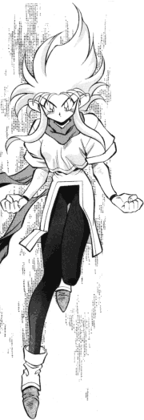

Regular FanFics: L-M
|
This is the regular Tenchi fan fiction section. (No X-overs, Lemons, or tangental
work) All stories are sorted by either the author's last name or their pen
name. If you would like your stories published in this archive, please
go here. |
New * A-B *
C-D * E-H *
I-K * L-M * N-Q *
R-S * T-Z |
L
La'Dora (Washuryoko@aol.com)
Lady Athena
(giadaelisa@cox.net)
-
The Land of Fairy Tales Come True
Tenchi is thrown into the middle of an alliance between Elves and
Fairies in order to help them fight a great evil, which threatens to take
over both nations. (Multipart) -2/12/2002
-
The War of the Destined
This is an epic adventure full of fate, destiny, and love. 30KB
-3/26/2002
-
To Rule or to Love
Ryoko has a secret about who she really is. (Multipart)
-12/20/2001
-
Mothers, Daughters, And Lovers
Three characters have nighttime conversations. Who are they and what
do they talk about? 11KB -7/24/2001
-
Cold Hearts Melt Amidst The Burning
Fire
Two people have a reunion and reveal their feelings for each other.
12KB -7/24/2001
-
You Sang To Me
Tenchi chooses, but who is it? 14KB -7/24/2001
-
No Need For School
Tenchi meets Ryoko and Ayeka at school and he finds out that their
pasts and abilities aren’t the ones of a normal teenager. 89KB
-2/1/2002
-
Confessions On The Rooftop
Ryoko wonders why Tenchi won't show her any shred of affection. 12KB
-7/31/2001
-
The Flame
Tenchi's choice makes a big impact on the family in the future. 31KB
-12/23/2001
-
A Mirror of Loneliness
Ayeka feels the burden of a lonely life, until a sudden twist of fate
reveals it to be not so lonely after all. 9KB -3/11/2002
Lady Solarys
(Lady_Solarys@yahoo.com)
-
The Eyes
The music plays. The pictures change. But what was Tenchi feeling
after his return from Jurai. (Tenchi Universe) 9KB -11/27/2000
Viktor Lafaye
(aaron_lapacz@hotmail.com)
Steven Laird
(midknight@radiks.net)
-
Breakfast in Bed
This is the next first step for Tenchi and his five Ladies. Because
all five will be together in the furture. (Multipart) -11/5/2000
Lalandra
(lalandra_farrenwel@hotmail.com)
Marshall "The Biscuit" Leach
(WillNilesborne@aol.com)
-
The Eden Chronicles
Tenchi's pen pal arrives from Maine for a two year stay! But why doesn't
the truth about the Masaki household surprise him? (Multipart)
-9/25/2001
Leaf-chan
(leaf_chan@excite.com)
-
Samy^3
A Pretty Sammy OAV Fic. (Multipart) -9/24/1999
Leanne (Tangielo@aol.com)
Ledzepfan
(Ledzepfan111@hotmail.com)
-
A Crown of Lies
The carnival ends and the group live their lives as an incomplete
family. A request from the Emperor of Juria catapults the Tenchi crew into
a battle to survive and preserve the good in the universe. (Multipart)
-1/30/2002
-
Scar on My Heart
A wound may remain a fleeting memory of a time, but a scar is a permanent
engraving on a body or soul. A scar can dictate what we feel, how we act,
and the course one life may take. 48KB -9/13/2002
Joseph "tm_fan1023" Lee
(tm_fan1023@hotmail.com)
Leechu
(luckyguess100@hotmail.com)
-
Tenchi Dimensions
A mysterious traveler named Cupid has a chance encounter with Ryo-Ohki
in a strange first episode of the saga. (Multipart) -11/13/2001
Leeman
(syaoran@tampabay.rr.com)
-
A Valentine's Day to Remember
This Valentine's Day will change change Tenchi's life and the lives
of the girls who live with him forever. 46KB -5/21/2001
-
Fragile Hearts
A story set in the OVA universe after Manatsu no Eve. (Multipart)
-7/16/2001
-
A Birthday of New Beginnings
Ayeka's birthday is imminent. What surprises will she encounter this
year? 54KB -1/30/2002
Adam Christopher Leigh
(Omicron@sprynet.com)
Lem (katz-myers@juno.com)
-
Ryoko's Past
An experiment by Washu awakens a hidden memory in Ryoko. 55KB
-7/18/2001
-
World of Stars
My outake of the Tenchi Universe series: "Time and Space Adventures"
episode. 19KB -12/19/2001
Jeff Leonard
(Jeffgoat11@aol.com)
Vrag Leonharte
(shortbus548@aol.com)
Tristan "Psuedo-Tenchi" Letscher
(ClaudeKnny@aol.com)
Li-chi the Goddess
(slimshady@pcisys.net)
Michael "fuzzy_bunny" Lilly
(fuzzy_bunny@rocketmail.com)
-
"No Need for Good News"
A semi-humorous look at what life in the Masaki household might be
like if Tenchi "got religion" so to speak, becoming a born again Christian.
9KB -9/15/1999
Lionman6 (lionman6@juno.com)
Literary Eagle
(literaryeagle@hotmail.com)
Little Ayeka 40
(little_washu40@hotmail.com)
Gary Littlejohn
(dragon@icon-stl.net)
Little Washu
(MoonPrincezz@altavista.com)
-
The Child
Washu creates a child with the help of Tenchi, but what they don't
know is there's something very different about this child. 22KB
-9/23/2000
-
The Book of Nightmares
Everything seems to turn evil when Tenchi finds an old book on the
floor one Halloween. 16KB 10/23/2000
-
A Random Act of Madness
A story where nothing makes sense, just a lot of insanity. 5KB
-9/17/2001
Greg Lively
(Vault_Keeper_2000@yahoo.com)
-
The Switch
A rewrite of the original story "The Switch," that uses Tarot cards.
93KB -1/16/2000
Jesse Lockhart
(jesslock@bellsouth.net)
Loknar
(loknar_kun@hotmail.com)
-
The Orion Chronicles
Set right after OAV 13, this fanfic series explores the possibility
of what would happen if two additional guests joined the Masaki household.
(Multipart) -5/1/2002
Loneshark
(loneshark707@hotmail.com)
Diane Long (shire@one.net)
-
Little Ryoko
Washu pushes Ryoko to reclaim the stolen memories of her youth. 98KB
-4/9/2001
-
Ghost in the Machine
This story picks up after the events of "Little Ryoko" and follows
Ryoko's growth as person as well as her relationships with Tenchi and Washu.
Things do not go smoothly. 156KB -11/13/2001
-
Mother's Day
This ficlet follows the events of "Ghost in the Machine". Rusty from
lack of practice, Ryoko tries to do something nice for her mom. 16KB
-11/13/2001
-
Reality Check
This ficlet follows "Mother's Day". Now that Washu and Ryoko are getting
along so well, its time for a fight. 21KB -11/13/2001
Loose Juice
(LooseJuice@geocities.com)
Lord Cirex the Historian
(Cabbit@rocketmail.com)
Joe Louis
(amkwolek2005@hotmail.com)
Lt. Tycho "Cordaki" Cordova
(Cordaki@galaxypolice.com)
-
Divided Loyalty
A favor to repay an old debt is requested. The assignment is simple
enough but what are the motives? (Multipart) -10/8/2000
Patricia "Kyokki" Lucky
(kyokki21@yahoo.com)
-
With the Sunrise
A new visitor joins the Tenchi crew. (Multipart) -7/30/2001
-
A Chance Twice Taken
Tenchi decides, but that's really not what this story is about. 36KB
-2/1/2002
-
Every Princess Needs a Knight
Sasami is afraid to assimilate, and Tsunami arranges for a distraction.
(Multipart) -9/19/2001
-
On the Horizon
The continuation of 'With the Sunrise.' (Multipart)
-11/13/2001
-
Arretez le Main
"...to still the rising hand of fate, to clear the fogging mists of
time, if early shall arrive too late..." 32KB -11/13/2001
Luke "Drakstern" L.
(Drakstern@Yahoo.com)
Lunitic_dies
(lunatic_dies@excite.com)
-
One Night
A fic that mices the continualities of Tenchi. (Multipart)
-11/19/2001
Charlie "Mercury Knight" Lutz
(mercuryknight99@yahoo.com)
Lyn D.
(dragon48@mail.ptd.net)
Connla "Tales Of The LightHawk" Lyons
(blitz_k@hotmail.com)
-
A piece of Mind Saga
A mysterious boy with no memory but intense military training is taken
in by Sasami and Washu, but trouble follows. (Multipart) -10/8/2001
Shawn "Ryu???" Lyons
(rubynall@hotmail.com)
M
M&M Angel
(lil_ryo@yahoo.com)
-
Seed of Revenge
Tenchi and all the cast are in a time compression but they never knew
. now, a girl named Ryochi, Ryoko's daughter, appeared from nowhere. 111KB
-10/8/2000
Dan Magee (DannyM888@aol.com)
-
"The Prince and the Princess"
Tenchi goes through a personal crisis and Ayeka helps him through
it. 10KB -12/29/2001
-
The Untold Tales of Ibara
Ibara decides to embark on a new life. (Multipart) -3/11/2002
-
Love?
A deeply psychological story where we find out why Tenchi could never
confess his love. 10KB -5/3/2002
Malena
(magdalena_gv@hotmail.com)
-
The Sea of Change
Set after Tenchi Forever, Ryoko is tired of the current love triangle,
and begins painful steps to mature. An introspective look. (Multipart)
-4/23/2002
Alex "AlexMax" Mayfield
(alexmax@zeldaclassic.com)
-
Moonlight
Tenchi loses his temper and snaps at one of the girls. Will he have
the chance to apologize? 85KB -11/7/2001
Michael MacDonald
(KNIGHTSABR@aol.com)
Lennox "Digital_bannana" Macduff
(ebh_maul@hotmail.com)
Joanna MacKenzie
(joanna@mackenzie76.freeserve.co.uk)
Bruce MacNeel (macneel@gte.net)
Maddog
(Hitmonchansey115@aol.com)
-
The Insultomatic - Part 1
Washu's newest invention which is to supposed to be for fun causes
nothing but trouble. 3KB -9/18/2000
Magukarugo
(magukarugo@AOL.com)
-
The Deadly Game
Ryoko and Ayeka go to school with Tenchi were they meet someone with
a grude against the goddesses. (Multipart) -9/22/2001
Magus the Dark (magus@zebra.net)
Farzad Mansouri
(mansouri@wam.umd.edu)
Aaron Manuel
(ATMicHurricane@aol.com)
Marley (Pourri42@aol.com)
-
The Rules
In this tale set long before the days of Tenchi, a lonely barkeep
on a miserable asteroid finds his life transformed when a strange visitor
arrives. 55KB -9/18/2001
Cyrus Marriner
(rowsdower@seanbaby.com)
-
The Edge
Ryoko tries to deal with her feelings when Tenchi chooses Ayeka. 7KB
-9/17/2001
-
A Log's Life
Azaka and Kamidake now have their own fic! It's Azaka and Kamidake's
space adventure! (Multipart) -3/11/2002
Andrez M. "DREZ" Martinez
(Unholydragoon@aol.com)
Yuri "Princess Ryoko" Maruki
(Demoness_Silver@hotmail.com)
Master Kodama
(master_kodama@yahoo.com)
-
Bitter, Sweet Dream
A slightly dark tale about what the future can hold. Tenchi TV continuity.
51KB -7/18/2001
-
Tenchi Muyo!: Trials and Fears
A 3rd OVA speculatory fic. A new ally arrives, and an old nemesis
resurfaces, both with connections to our characters' pasts. (Multipart)
-10/8/2001
Devon Masterson
(aoi37@hotmail.com)
-
Sayoko Saga
Tenchi and the others cope with the loss of someone dear. (Multipart)
-11/15/2001
Ryan Mathews
(Mathewl@ix.netcom.com)
Matrix3
(Matrix3@geocities.com)
-
What Tomorrow Might Bring
The Tenchi gang go into the future looking for a lost Mihoshi only
discover what is to come. (Multipart) -2/12/2002
Greg Matteson (Matteson@jps.net)
Alex "AlexMax" Mayfield
(alexmayfield@carolina.rr.com)
David "Mayhem" Mayhew
(mayhem1979@hotmail.com)
-
Mayhem, Chaos, and General Messes
A class A criminal, and murderer of one of the Jurai royal family
arrives on earth... guess who gets kidnapped. (Multipart) -6/22/2002
Michael "Shorin" McAvoy
(mmcavoy@ejourney.com)
Dorothy McCoubrey
(therose1@teen.com)
-
Tenchi’s Decision
The start of a relationship between Tenchi and Ryoko. (Multipart)
-11/27/2000
Jesse McDade
(McFlysucks@aol.com)
Jacob McDonald
(Japhith@Juno.com)
Thomas McKee
(cormac828@hotmail.com)
Ryan "Dinobot" McMeen
(debmcme@home.com)
-
Sins of the Past
New, mysterious, and powerful forces enter the universe that will
change everyones' lives forever. (Multipart) -1/8/2000
Heather "Sakuya Misaki" McNully
(tenchigirl@yahoo.com)
Kenny "Acidbuk" M'comic
(acidb@postmaster.co.uk)
-
Dinner for Two
Tenchi is prepareing a romantic dinner but for who? PG-13. 18KB
-5/30/2002
Meachy (Meachy@hotmail.com)
-
Something is Out There
Tenchi's classmate exibits extraorinary powers. (Multipart)
-4/20/1999
-
Ghost in my Heart
A past love returns, but Nobuyuki has remarried in this Valentine's
day fic. 23KB -4/7/1999
Joe Meadows (gpabn@yahoo.com)
-
Tenchi Wakusei
The sequel novel to "Tenchi Universe," in which the gang deals with
a series of new realities, adjusts to a new player, and faces an enemy that
not only plans to destroy them but also fully intends to enjoy doing it.
(Multipart) -2/12/2002
Meachu-chan Mary San
(maryramsower@satx.rr.com)
-
Tenchi I
Ryoko gives Tenchi a lesson in combat. 19KB -5/30/2002
-
Tenchi II
Ryoko attempts to summon a demon with disastrous effects. 17KB
-5/30/2002
Megumi-san
(megumi@address.com)
Meina Exclabir
(kittiegirl24@yahoo.com)
-
The Truth
Can Ryoko be the most powerful being in all of space? (Multipart)
-4/16/2001
Mel: The Charmer of Dragons
(DragonCharmr8753@aol.com)
-
The Ryo-ohki Saga - Part 1
Synops. Ryo-ohki's point of veiw since the day Sasami found her in
a cardboard box . 3KB -9/19/2000
-
No Need for Fear
There's nothing like a little fear to bring two people closer. 10KB
-11/5/2000
Jerico Mele
(jmele@brandeis.edu)
Mel~Bel (Avel2468@aol.com)
-
The Mikumi Saga
When Tenchi and the gang find another princess of Jurai they must
bring her home. (Multipart) -5/28/2001
The Menace Washuu
(allyn.howey@worldnet.att.net)
Dave "DaveCatt" Menard
(menard5078@home.com)
-
The Memory Of Your Smile
A bridge between episodes 24 and 26 of Tenchi TV revealing what became
of Ryoko after she dropped Tenchi off outside the Jurai Palace. Introspective,
with both Dark and WAFFy elements. 17KB -4/17/2000
-
Tenchi Mucho!
Washu (from the TV continuity) rebuilds her Dimension Tuner and encounters
her counterparts from the other Tenchi canon universes. (Multipart)
-6/21/2000
Florencio B. de la Merced, Jr.
(Fmerced@pworld.net.ph)
Mercury Angel
(mercury_angel_00@hotmail.com)
Mercury Knight
(mercury_knight2001@yahoo.com)
Merlin
(ohki-eden@tenchieden.com)
-
Sonnets of Old
A tale of Washu's past and how Kagato shattered it. 43KB
-5/28/2001
John Meszaros
(avomvrorskek@hotmail.com)
MetroAnime
(MetroAnime@aol.com)
Michael, The Heartless Reaper
(TheHeartlessReaper@hotmail.com)
Leon "Reonu" Michaels
(reonu_michaels@hotmail.com)
Tim Miller
(TRMiller@mail.bcpl.lib.md.us)
-
"Innocent Child"
An intresting fic about Aeka's and Ryoko's constant fighting.
14KB
Mirei-chan (Tanyaneko@aol.com)
Misanthrope
(misanthrope32@hotmail.com)
Miss Chibi
(chibi_ryoko_sama@troublemaker.zzn.com)
Missionman
(missionman007@military.com)
Mitch (wells17@gte.net)
Mochi
(Mochi_man_uk@hotmail.com)
-
Resolution and Revelation
Ayeka has the blues and Ryoko returns from a long absence via her
salvation? (Multipart) -3/26/2002
Jeff Morris
(jeffreysmorris@aol.com)
-
Cherry Blossoms
Kagato's deadly legacy strikes a member of the Masaki household, and
nothing--and no one--will ever be the same. 67KB -12/20/2001
-
Wounded Knee
An injured Nagi mends in a hospital bed, helpless and vulnerable to
her enemies. 10KB -5/3/2002
-
Never Forget
The heartwarming story of a Juraian Queen and her elephant. 13KB
-5/3/2002
-
When Hairy Met Nagi
The tale of how Nagi and Ken-ohki became partners. 36KB
-5/3/2002
Michael Muirhead
(MikeMuir78@aol.com)
Anthony "The Magician" Murlin
(gehenna_2ooo@yahoo.com)
-
The Darkest Hell
A dark Tenchi Fan fic. (Multipart) -1/18/1999
-
Memories of a Hidden Me
Tenchi is rendered unconscious, and wakes up to learn that his entire
life has been nothing more than a dream. 28KB -12/19/2001
Murphy (dancer@bayou.com)
Mystie
(lilwashyuu@yahoo.com)